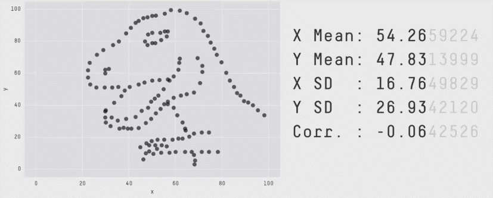

Explain that the main advantage of visualizing data instead of presenting it with numbers is that they are easier to interpret for humans.
Distinguish between exploring data to discover patterns and communicating findings to others.
Explain why similar summary statistics can hide very different patterns in the underlying data.
To improve own understanding of a dataset
To improve someone’s else’s understanding
To answer a specific question about a dataset
Help us generate new questions
Think of data visualization as a human “data language”
Visualization is often where a data analysis begins and ends
If we only had looked at the raw data or the summary statistics, we would have come to the wrong conclusions about how the datasets differ
Any research or business level decision based on solely on our numerical analysis of this dataset would have been misinformed
Our number systems have only been around for about 5,000 years
We need to assert effort and train ourselves to recognize structure in numerical data
Visual systems have undergone refinement during 500,000,000 years of evolution
We can instinctively recognize visual patterns and accurately estimate visual properties
We can arrive at correct conclusions faster by studying graphical rather than numerical representations
